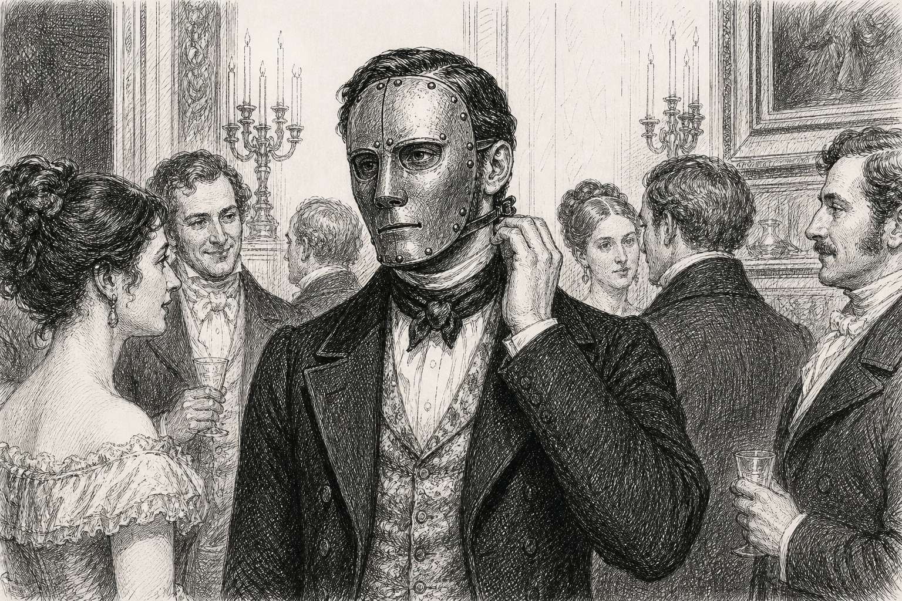

When finding problems to solve leaves people more confused about what you do
I was supposed to make discharge follow-up calls, but I couldn’t leave the broken medication-reconciliation form alone when patients kept reading me two different lists. Then I got pulled into the nurse-scheduling mess between the two units, and I figured out the vendor portal nobody could log into. At first everyone was grateful—‘Can you just take a look?’—until I started asking who owned what and why the same failures kept landing on patients.
After that, people got guarded. A unit manager said I was crossing lanes, but by then nurses were calling me about the schedule and the vendor had my name as the contact. If I backed away, the mess became mine for dropping; if I stayed, it was proof I wasn’t focused on my actual job. I could explain how it all connected to discharge calls, but nobody above me seemed to hear one job in it.
At my review, my director said, ‘People don’t really understand what you do here.’ The form was working by then, and the portal was finally open, but those weren’t the boxes on my review. I got transferred out of patient experience, and what stuck was that I’d been involved in too many problems. By the end I was exhausted, sitting in that meeting with a whole pile of fixes nobody wanted attached to my name.
You notice problems across the organization and take on work outside your formal role, especially when no one else is addressing it. As those efforts expose you to more connected issues, you fold them into your job and spend more attention on politically charged work that others may not understand or credit. Your role becomes broader but harder to explain, while you become associated with lingering problems and responsible for keeping side efforts alive. By the time your work is judged, people may see a lack of focus rather than the value you added, and stepping back would mean abandoning commitments and undoing an established story about what you do.
This loop starts with doing things outside your job description and getting into trouble for it. You have many interests, varied skills, and areas of curiosity, along with an ability to sense issues and check coherence across parts of the organization. At the same time, you may not see hard boundaries or pick up on how your behavior could step on toes. An excitement and core need to share your energy and skills mixes with a desire to help or a feeling that “we should really address this,” and incoherence can stick with you even when you can sit with it, keeping you engaged.
You start getting your fingers into many efforts, often ones that are not officially part of your job description. Because these are lingering problems, they are often politically charged—there is a reason they have stuck around—and you also get your teeth into wicked problems with a lower probability of working out. A slight perception develops that you are not focusing on your role and are stepping outside its boundaries “too much.” People are initially very gracious about your desire to help, and generally receptive, but they may begin to feel threatened. At this point the work has already left the formal job, but it is still possible to step back without much of a story to undo.
Doing this across multiple efforts gives you more exposure to the organization and to more problems, so you tackle still more and begin seeing the causes behind immediate challenges. You become genuinely intellectually stimulated by the variety, especially when you think the problems are core. The side quests take more of your attention, but pattern matching gives you legitimate reasons to connect them to your role, so you increasingly lump them into your “job” in ways others may not understand. You do not immediately seek credit, so you often do not get it, while a sense grows that you are “doing things” people do not generally understand. Narrowing down now means dropping relationships and problems you are already in, and unbundling a role that already makes sense to you.
You are now doing more, getting into more, and spending cognitive energy on more, increasing the probability that you step on toes and that people feel threatened or simply do not “get” the work. You become a symbol or figurehead for problems you have waded into. Even when you have wins, only some people notice them, and your boss may not. Solving wicked problems also makes you beholden to keep them going; if no one else picks them up, you can be blamed. Stopping invites that blame. As you fashion yourself more as a generalist, your wins become more diffuse and your narrative less coherent, so continuing makes you even harder to explain.
At moments of judgment such as layoffs, people “don’t get what you do.” They associate you with problems and may decide those areas need “fresh” views; your work is less understandable and simplifiable, and not what your boss or manager wants or needs. Reversing it would mean undoing an established story about who you are, not just changing your workload. Meanwhile, other people are toeing the line and doing what they are told. You keep coming to grips with how mired and potentially twisted things are, becoming more cooked as the loop spins out of control in interesting and self-defeating ways, draining you and wearing you out.
When they take what they already agree with, then turn
The VP kept dropping by our internal research team and asking for the “uncomfortable version” of the climate outlook. I ate that up. I walked him through the methane assumptions, the demand scenarios, the parts of the gas-expansion deck that didn’t survive our own model. Then I’d hear him in an investment meeting say, “I’ve been talking with our climate scientist,” and use one narrow result to claim the expansion plan was climate-aligned. The first time I corrected him, people acted like I was rewriting a conversation we’d all supposedly agreed had gone well.
After that, my work started circulating without me. Someone would test “my position” with permitting or finance, it would get flattened into some impractical demand, and I became the theorist who couldn’t give a usable number. Colleagues stopped inviting me to the scenario reviews, and the VP went from seeking me out to treating every question as a challenge to his authority. By my annual review, my manager said I’d become a liability to the team and offered me a transfer with no research remit. I left instead. I was furious by then, but I was also second-guessing every model note I’d written, wondering how being asked to speak plainly had ended with everyone saying I was impossible to work with.
People seek you out for ideas that challenge the usual thinking, and their interest makes you feel heard and useful. They repeat only the parts that fit what they already believe, then grow frustrated when your ideas do not produce the clear actions or agreement they expected, testing a simplified version with others until you gain a reputation as impractical or difficult. When their interest turns to distance, you feel dismissed and become more defensive, outspoken, or withdrawn, while the relationship takes on political weight and others follow their lead. Your isolation then makes you look like more of a liability, reinforcing your belief that the workplace cannot accept your thinking and making each later interaction harder to repair.
People are looking for someone to break the rules a bit and present different ideas, so they become “curious” about what you are putting out, seek you out, and want some of it. You may hear, “It sounds very important what you are saying, but I want more than that.” That interest can be self-edifying because it validates your ability to see and sense things.
You lean in, excitedly sharing your perspective and what you want to know. Initially, they seem to listen and take it in; they may say in another meeting, “So I was talking to Cutler about this…,” or ask other people to speak with you. But there is no deep alignment: they do not agree, or do not yet see enough to disagree. They keep tapping you and welcoming the information, while pulling out only the parts they already agree with. They like that you are vocal and think they agree, but selectively. Correcting that version later means challenging the sense that the conversations were productive and aligned.
As you keep sharing, things get a little weird. They keep fishing for actionable points they will understand and may have trouble finding them, so you become pegged as a theorist or someone who is “all talk.” They begin to resent themselves, and you, for conversations that did not go anywhere. They test what have become known as your ideas in repeated conversations with “other” people, without you there, and those ideas get shot down. Reversing the story now means repairing a broader reputation rather than clarifying one conversation.
You are perceived more broadly as a threat because you have someone’s ear and are a bit of a heretic, while they resent how much information they shared with you. You sense the shift and feel hurt: someone who validated you now seems to be turning on you. You feel dismissed, invalidated, or ignored, and if this is a person in power, you may feel the threat of their directed energy. You felt close to making a difference and then shunned. Your justice meter reacts to slights against you and others; you typecast them as unfeeling and manipulative, become less hopeful, less confident, and more defensive, and start second-guessing your expertise and having doubts. Meanwhile, the message that “the leader doesn’t like X” spreads. Seeking clarification, withdrawing, or continuing to push all become riskier because the relationship itself has acquired political charge, and later interactions are more likely to be read as hostility.
Other people begin to alienate you, leaving you more alienated and defensive, while people who stay in line do not become the same kind of issue. You conclude that people are change-averse and the place is too political, and you start ostracizing yourself. At a moment of managerial judgment, your manager sees you as a bit of a liability. It becomes your ideas versus their ideas—and everyone else’s—and you come to believe your thoughts are incompatible with the environment: more defensive, more outspoken, more ostracized. Undoing it would mean reversing a distributed story while also undoing the withdrawal that story produced.
When defending people puts you against the people with power
When the new pick quota hit, good pickers were getting written up for scanner downtime caused by empty slots and jammed conveyors. Regional ops kept calling them “poor performers,” and that got under my skin. I started attaching exception logs to every write-up because I honestly thought, if they saw the missing information, they’d fix it.
Then pickers started bringing me every warning, and I became the person standing between them and management. I spent half the shift checking scan histories and making calls after clock-out, while the supervisors who might’ve kept me grounded stopped saying much. Regional got harder with me, I got sharper with them, and even a routine station change started looking like retaliation.
By my review, none of that repair work counted. What counted was that I’d challenged the quota in meetings, gone around my manager, and let my own reports slip. They said nothing was ever good enough for me and transferred me off nights. Sitting there with that review form, I could hear how fixed the story had become: I wasn’t defending anybody anymore—I was just the negative supervisor making the building harder to run.
When you see powerful people ostracizing or dismissing others, you step in to supply context, defend the people being hurt, and try to repair what may still feel like a misunderstanding. People begin bringing you their concerns, and as you take on more invisible one-on-one work, you become publicly aligned with one side, lose contact with middle-of-the-road perspectives, and pay less attention to your formal job. Your growing defensiveness and work outside the structure make your recommendations easier to reject, while changing course feels like abandoning the people who now rely on you. The repair work stays hidden, the opposition stays visible, and you become known as negative or impossible to satisfy, leaving you more isolated and consumed by the conflict you were trying to resolve.
You are already sensitive to equity, power imbalances, and people being ostracized, often by a small set of powerful people. Their behavior starts to stick as a fairness issue and triggers a need to defend, push back, or come to the rescue, along with childhood feelings of being disregarded or hurt or of being lumped into a group when someone spouts off about “poor performers.” You enter defense mode, though your need for coherence may leave you holding on to the possibility that this is a misunderstanding.
You start supplying missing information, believing it may explain what is happening, and may lock into trying to win over the people with power. You align naturally with the people being hurt and become a figurehead, while growing more caustic, defensive, and threatened around people you see as abusing power. At the same time, you try hard to help, connect, keep the peace, and ask, “What if we could just figure this out?” You are standing in the way from the start, putting out a flag that brings people to you for help and makes you a sponge for their anxiety; your perceptions may even start to warp. You hear less from middle-of-the-road people who could provide perspective, and it can quickly become “us versus them”: us as the thinkers and feelers, them as the short-sighted, selfish people, which increases the incoherence. Once you are identified with a side, later neutrality or clarification is harder.
You may slip further into being the defender, savior, or peacekeeper standing between groups. If people are bullying, your anti-bully stance may prompt them to bully more; barring an extreme case, the people on the other side probably do not fully understand what you are responding to. You do more non-visible work in one-on-ones, trying to understand and repair, while probably paying less attention to your actual job. The deeper it gets, the more responsible you feel for understanding every angle and every tension. You attract allies who are already on people’s shit lists and rarely attract connector allies, so the work increasingly feels like yours to hold. Changing course can look like abandoning allies, and stopping the unofficial repair work gets more costly the more of it you have taken on.
Once it is “us versus them,” your advice and recommendations are far less likely to be accepted. The parts of you that work well with coherence are likely much less tuned for incoherence: you are not nice, and you are not helping. Everything can be framed through the problem, so you see it everywhere and stop making complete sense. The more it consumes you, the more it consumes you, looping inward. Your repair work remains largely invisible while your opposition becomes visible, and you threaten the most powerful people. You may also do skip-level work and operate outside the formal structure, making the politics, attention, credit, and ownership around the conflict more costly. Returning to ordinary structure would mean undoing relationships, expectations, and the story already created.
You become typecast as the person for whom “nothing makes you happy,” “nothing is right,” and who is “so negative,” someone who is just making things worse—and you might be making them worse, just a bit. At moments when your advice or recommendations are judged, the established sides make acceptance unlikely. Compared with people who stay within the formal structure or remain middle-of-the-road, your outside work, visible alignment, and figurehead role put you closer to the conflict and farther from the people with power. You are left increasingly consumed, defensive, isolated from perspective, and seen through the very problem you have been trying to understand and repair. The typecast is now the story people use at moments of judgment, not just a feeling in the room.
When you keep saying it isn’t figured out, and that becomes your reputation
They kept saying the protocol and eligibility criteria were locked, but the lab manual had one renal cutoff, the screening worksheet had another, and the vendor portal would accept patients the protocol excluded. I wasn’t asking for perfect information. I wanted us to say it was unresolved before sites consented people. At first, investigators and monitors came to me privately because I could trace the contradictions. Then leadership started calling every question “another one of her concerns,” and people who had their own fights with the trial began copying me on everything.
I tried to soften it and say the screening process wasn’t stable, and they said I couldn’t give specifics. If I listed the subject IDs, denial codes, and protocol sections, I was accused of escalating and holding enrollment hostage. I kept making longer explanations for different meetings, trying to prove I wasn’t confused, while everyone else moved on with the quota. By then I was spending more time rebuilding the argument than clearing queries and scheduling visits.
At my review, the original contradictions barely came up. It was about my tone, my inability to simplify, and missed coordinator work. I was so defensive I sounded exactly as difficult as they’d been saying I was. They transferred the trial to another coordinator, and I left a few weeks later with the amendment still unsigned and two screen failures nobody wanted to discuss.
You notice when work is being presented as settled even though it is not, and you keep asking questions to understand and resolve the gaps. Those questions are treated as threatening or obstructive, giving you a reputation for being negative, perfectionistic, or unable to move on. As you explain the issue to more people, gather others who share the concern, and alternate between broad claims and detailed specifics, the explanations grow more complex and the resistance becomes more personal. You become increasingly defensive and focused on the incoherence, while others keep working around you, until the conflict itself adds to the disorder and begins to keep you from doing your job.
You naturally notice incoherence, are affected by it, and are interested—sometimes compelled—to resolve it. From the start, this can be perceived as perfectionism or as needing everything to be perfect. For some people that is true: they need perfect information before they can perceive. But for most people reading this book, uncertainty can still be coherent; you can say, “we’re uncertain.” What gets to you is when people say something is figured out when it is not, or create optics around it being figured out. That ability to see incoherence, and the willingness to resolve it, starts a particular loop.
You are more likely to mention the incoherence because you are trying to understand it, and you spend time and cognitive energy sorting out whether it is actually incoherent, whether you are misunderstanding it, or whether other forces are at play. People start to notice. Seemingly innocent questions can be perceived as threatening or as a waste of time, and you may be branded a perfectionist, skeptic, or negative for asking them. As people treat you that way, a negative threat response is triggered. At the same time, your ability to unravel the issue and provide coherence can create a strong pull from some people: what you are saying makes sense, you see the problem, and you are willing to call it out. Later clarification has to get past an established label, not just restate the question.
It starts to feel as though the incoherence is your problem rather than everyone’s, while on your side you discuss it with more and more people, so it increasingly feels like everyone’s problem to you. You attract people who are also seeking coherence, and the more of them you attract, the more you are lumped in with whatever baggage they carry. In trying to soften your message, you may use sweeping generalizations, which then gets you branded for not naming specifics. Doing more to understand, explain, and gather others around the issue produces more of the same reactions and makes the work of resolving it feel increasingly like yours. Stepping back or separating the concern from that group becomes more costly, and softening into generalizations creates a trap: stay vague and you are ungrounded; get specific and it is a threat.
As the threat level grows, you also become less willing to name specifics because “people are talking” is treated as an immediate threat. Feeling misunderstood, you spend more cognitive energy explaining the issue to different audiences. The explanations become more complex, and you are criticized for not simplifying them or making them accessible. This may connect with other loops, so you start to imagine powerful people actively trying to silence or dismiss you. A willingness to jump in and tolerate ambiguity, provided there is a north star, flips into threat: the people imposing the incoherence feel threatening and overbearing, triggering a power response. Your natural attention to detail is genuinely overwhelming to some people; in better circumstances that might not matter, but as the situation degrades, what you say starts to sound theoretical because it links too many ideas to feel actionable. Your ability to describe the issue at multiple resolutions, and to jump between them, comes across as frenetic and disorganized. The conflict is now about power and safety as well as the work, which makes a neutral reset harder.
Meanwhile, people who just want to get on with the work become increasingly frustrated, and it does begin to seem as though you are being obstructionist. The more you are typecast and judged as unable to simplify, specify, or move on, the more defensive you become. The more defensive you become, the more you are actually part of the incoherence: there is now a layer that feels personal, not just the original incoherent thing. While people who stay in line keep going, your fixation increases the chance that you miss areas of coherence you could latch on to, making everything feel still more incoherent. Eventually, the loop can become all-encompassing, and you start not doing your job. Reversing course would require changing both the external story about you and your own defensive involvement.
When going deep looks like you aren’t driving anything
It started with, “Just check this vendor file.” I found the invoices depended on allocations through three subsidiaries and a lease nobody had mapped, so I pulled it apart and rebuilt the flow. The first time that exposed duplicate charges, everyone loved it. After that they kept handing me messy files, and I kept finding one more agreement or approval that changed the answer. I’d recommend a payment hold, but because I also explained the exceptions, they heard hesitation.
Once the renewal was on the table, the same work became me making things complicated. I couldn’t simply drop the lease exposure after I’d documented it, and every clarification sounded like another delay. By the review meeting, the audit lead had a clean story about closing the file, while I had twelve tabs, three entities, and a conclusion that still depended on who actually controlled the lease. They transferred the file and wrote that I was thorough but didn’t drive action. By then I was so worn down that even my explanation of what to do next came out tangled.
You break problems apart, connect hidden patterns, and hold several explanations at once, producing strong work when others can follow the path. Because that depth is rewarded, you keep widening the frame, uncover work beyond your scope, and take on more than others can see, sometimes missing deadlines or struggling to leave identified risks alone. When your account conflicts with a simpler preferred story, your thinking is treated as theoretical, indecisive, or non-actionable, even when you have a concrete move in mind. You respond by doing more analysis and pushing harder for coherence, which drains you, makes the explanation harder to land, and further fixes your reputation as someone who goes deep without driving action.
This one is centered on the sheer ability to go deep—and not just deep, but deep and broad. You break things apart quickly, sometimes ripping them apart on purpose so you can reconstruct them. You consider different angles and frames quickly, look for hidden patterns, draw connections, and hold competing ideas at once, often landing on “it depends.” That capacity starts to stick as a defining way you approach work.
This can produce stellar results, especially when you make your thinking accessible, and you are rewarded for the results and output. But it can go wrong at several levels: at the wrong moment you overwhelm people, and when things do not work, you are seen as making them too complex or complicated. You may have simple prescriptive solves in mind without communicating them simply. Once you are known for complexity rather than action, each new deep pass can reinforce that reputation.
The rewards encourage more depth, which lets you create a great deal of work for yourself very quickly, unearth more angles, move into problems outside your purview, and potentially miss deadlines. You may rightfully conclude that “unless we address THAT, there’s not much use in focusing here,” but then you have to maintain your complex unraveling of the situation. People who wind you up can push this further. On the good side, maybe you are assigned more things you can run or drive yourself, making the work increasingly yours; when you are lucky, you produce models that make everything click. But others may not be involved enough to know what work you are doing. After you have exposed overlooked threats, dropping them or returning to a narrower task costs more than staying in scope would have, and autonomy can leave too few witnesses to correct the picture.
When your results cohere with what other people want, you are good; when you expose threats they had not considered, it goes wrong. Your narratives are compared with simpler ones, and “But how can we make this actionable?” follows even when you think it is actionable. You can fool yourself into believing you have found the root cause, or confuse seeing the system with being able to change it—a false confidence that insight equals action. You become increasingly frustrated when people discount the complexity you see, while the problems you raise sound big, theoretical, and non-actionable. You may objectively hold all the moving parts constant in your head, yet your explanation sounds like a house of cards or feels threatening. People who discount you or do not pay attention risk becoming threats themselves, and the push for coherence is admired while also being seen as selfish and individual. Ordinary clarification is less likely to be received neutrally, and simplifying, revising, or abandoning the account now feeds the existing story about you.
You become known for going deep as a performance “shtick,” rather than for driving action, and your thinking is read as waffling, lacking conviction, or lacking a bias for action. Holding multiple perspectives repeatedly becomes evidence that you have no convictions; what people do not understand becomes proof that you are too theoretical, and you become associated with dragging your heels. At moments of judgment, simpler narratives that align with what others want stand against your complexity, while your ability to keep competing ideas in mind makes it seem as though you never commit. When people do not validate how far you got, you become more cognitively drained, which increasingly compounds the incoherence in how you present the ideas. You are further marginalized and othered, and masking this ability drains still more energy. At judgment, the reputation is already the contribution: depth without a simple story of driving.
When this workplace becomes how you measure yourself
The board approved my first campaign plan, and at the gala two trustees told me I’d changed the museum’s future. I lived on that. Pretty soon a returned donor email meant I was talented, the executive director using my numbers in the board packet meant I mattered, and a declined lunch felt like a verdict. I stopped going upstairs to look at the collection—the reason I’d wanted museum work in the first place—and spent nights rewriting pledge forecasts.
People picked up on it. Praise came when I landed a gift, then disappeared when the annual-fund target slipped. I kept thinking I could fix the mood if I worked every angle, so I took on the capital campaign, overshared with trustees, and talked about the museum like it was my family. By the time they reassigned half my donor portfolio, I couldn’t treat it as an administrative decision. I second-guessed every call, got defensive in meetings, and became worse at the work I was desperate to prove I could do.
The review that ended it lasted twenty minutes. They slid a form across the table saying I hadn’t met expectations, and I remember staring at the museum letterhead like it had the authority to tell me who I was. After I left, the donors stopped returning my emails altogether. That silence hurt more than losing the office.
You start measuring your ability and worth by whether this company gives your work credit, attention, and adoption, until being good at your job feels inseparable from figuring out the organization. Validation pulls you further in, while criticism, indifference, or failure feels personal and makes you work harder, second-guess yourself, and search for what you should have done differently. That insecurity makes you less effective, which can look like proof that the problem is you and increases your need for the company’s approval. Repeated across workplaces, the pattern can leave you unsure who you are outside them and disconnected from what you once enjoyed about the work.
This one is extremely difficult. As other patterns brew, it can become easy to associate your work with your workplace identity. Companies are ephemeral and often “messed up,” but when your problems become problems with the workplace and hold you back, you start to identify: instead of being a designer, you become “design at X,” where X may be tough to deal with. As that identity becomes prevalent, it is easy to forget why you started, what was fun, what you enjoyed doing, and what brought you up.
You start treating workplace reactions as judgments of you. Failure in that workplace triggers an identity threat; admiration and credit feel addictive and become associated with the people there, while even a slight can feel personal. A manager’s validation means “I did a good job,” and a leader listening means “They believe in me.” You link adoption of what you put out to progress, and if success and enjoyment depend on company validation, the work becomes an uphill battle. If you are a manager or leader, you may do your absolute best and still feel it is not enough; the only way to feel “whole” seems to be assimilating or solving the puzzle of that particular workplace. Separating yourself from the company is harder once the fusion has started, and leaving the puzzle unsolved can feel like remaining incomplete.
Organizations can thrive on that sense of loyalty. If you fashion yourself as someone who sees all the angles, your ability to “figure out the org” objectively becomes part of who you are. You work harder to figure it out and risk burning yourself out. Sometimes you do need to adapt, but if you can see many angles you keep wondering what you could or should have done. When things are good, you may become overconfident, overshare, and overinvest in the company. You may even start believing the company is a family, increasing both your attachment and your inability to detach. Treating the company as family, and the good periods, raise the cost of detaching later.
All of this is fragile, draining, and difficult to process because companies are not bastions of goodness or fairness; they are innately political and incoherent. Credit, attention, adoption, and ownership remain conditional, leaving you in a constant state of threat. The core identity threat makes you angrier and more threatened, and even the smallest comment can send you into a spiral rather than a “shrug, oh well.” You may stop trusting what you see and feel and second-guess everything you do. Even when you know better, you start acting from insecurity, which makes you less effective and less confident. Insecurity starts producing the confirming evidence: you are less effective, which then looks like proof.
You become seen, and see yourself, through whether that particular company validates you. At moments of failure or judgment, your confidence drops and the threat feels personal; people around you seem to have it easier or to have a simpler bargain, which exacerbates your sense of otherness. Across multiple companies, you may repeat the same mistakes and increasingly believe it is all you and all your fault. Basing yourself on companies leaves you drifting toward a place where you never feel whole, and the spiral can grow large: you might go through a decade of your career before realizing that you never really liked or had fun with what you were doing. Repeating this across companies makes the story broader and harder to reverse than a problem with one workplace.
When fitting in works, and you can’t stop doing it

I got praised after a parent meeting where a father was shouting over a suspension appeal form and I stayed warm, calm, almost cheerful. After that, I became the person they put in every hot room. The district liked me, the principal called me “steady,” and teachers started sending me problems before they’d even tried to handle them. I got so good at swallowing my actual reaction that nobody thought to ask if I had one.
By the time I was up for principal, that version of me was basically my résumé. I’d come home wrung out, and my family didn’t want another story about this pleasant administrator they barely recognized. Then, during the review meeting, I couldn’t keep the tone up. I said what I thought about the staffing plan, too sharply, and suddenly I was “guarded” and “not collaborative.” They transferred me to another school, and the strangest part was reading the evaluation—they described the person I’d spent years performing, then faulted me for failing to be her for one hour.
You adapt your views, behavior, and reactions to fit the workplace, and the effort pays off: you read situations better, avoid conflict, and are rewarded. That success makes masking a proven advantage, so you keep refining it even as it takes energy from the work and opportunities you could pursue. As your career and status grow around this performance, showing more of yourself feels increasingly likely to threaten what you have built, while guardedness leaves you with less support at work and at home. The accommodation becomes part of your professional identity, making the loop harder to leave as the strain, disconnection, and loss of self accumulate.
This is very difficult to deal with. You may not read the room as well as you might, or may consistently hold different views from those around you. It may have started in childhood, with pretending things were “OK” even when they were not, and it can be hard to imagine being quirky and weird while also being successful.
You learn to adapt and mask, investing a great deal of energy in play-acting a part you do not feel or regulating yourself around certain people. You get better at reading situations and sensing when you may need to adapt. Rather than lashing out in different jobs and having it go badly, this approach actually goes well for you: you get good at it and are rewarded for it. Because the adaptation is rewarded, dropping it would mean giving up a proven advantage.
Your ability to perform and regulate yourself gets honed and honed, making you more likely to use it again, so the loop perpetuates. You spend more time dancing in the job instead of tackling the high-profile wins you are capable of, or you pursue those wins while also doing the dance, which is doubly hard. You become trapped by your own accommodations because you are so good at going with the show; the loop can continue until you make a whole career of it and accommodation becomes your identity. Showing more of the unmasked self starts to feel like a threat to success, not just a personal preference.
As your self-awareness grows, the arrangement becomes an increasing tension, and the energy it consumes takes up valuable life force. In a more balanced situation, the work identity or work mask would stay at work and require minimal investment, but the overwhelm of taking it home starts to add up. The more you feel you are living a double life, with one side that could never be accepted at work, the more guarded you become and the less emotional and communal support you receive. If you are successful and rise into management, showing your cards feels even more threatening: you know, and are hypervigilant about, where it can backfire, so you become increasingly reserved about who you share what with. Meanwhile, people at home may not want to hear about a person they do not recognize. Clarifying or dropping the mask now risks a higher-status role and the career already built through accommodation, with less support at home for either version.
You may be seen as successful, but because you may not be 100% locked into what you are doing, you can miss potential opportunities. Some people get to be “authentic” at work because they conform to the norms or have power, while you cannot access that as easily. Over time, there is less sense of self and less sense of authenticity, with the potential for burnout and loss of self if you do this long enough. The accumulation can destroy you from the inside out. Reversing it would mean revisiting a long professional history and the story of who you have become, not just changing a tactic.
When you voice other people’s concerns and they step back
After the morning huddles, people kept cornering me with claim files where the new denial rules made no sense—same treatment, same documentation, different denial code. One adjuster would send another over, and pretty soon it felt like the whole floor was upset. So in the team meeting I said it was something “a lot of us” were seeing. The room went dead. The people who’d been so worked up at my desk suddenly studied their notes.
After that, it was my complaint. Management wanted names and exact counts; my coworkers said they’d only asked me to look at one file, or that I’d misunderstood. I kept trying to prove the larger pattern, which meant my own queue slipped, and every review became about my attitude and missed targets instead of the denial rules. By the meeting that ended with my transfer, even people who privately agreed wouldn’t sit beside me. I’d carried all that fear into the room for them, and they got to walk back out without it.
People bring you similar concerns in private, and you connect them into a broader pattern and voice it for the group. Once you speak up, the concern becomes associated with you, even though your sense of its support may come from a small, self-selecting group. The people who confided in you may step back when the issue becomes public, leaving you exposed without corroboration while others focus on your role rather than the problem. You become a figurehead for the conflict, and both continuing and stepping away carry costs for your work, standing, and energy.
Contrary to some assumptions, “sensers” may feel emotional incoherence very deeply. This dynamic has come up at several points in these loops, but here it needs a closer look: people become curious about what you are putting out, share their perceptions of what is happening, and leave you absorbing their pain, sadness, confusion, and tension. The role that starts to stick is spokesperson for other people, along with the burden that comes with it.
When many people bring you similar tensions, your pattern recognition fires: you stop individualizing the problem and see a pattern across multiple people. They seem passionate about the problem and about speaking up, but they are speaking to you. You feel drawn to combine their voices, start channeling their pain, sadness, and confusion, start speaking up, and try to relay their messages. Instead of them speaking or having their own voice or forum—even when you try to create one—you end up voicing the concern yourself, raising the question of who is actually voicing the pattern. Once you have voiced it, the concern and the spokesperson role start attaching to you, and stepping back or calling the pattern narrower gets harder.
The more people who find you, the more others find you through them, and you attract like-minded people; this may warp your sense of how much of the organization shares the view. You may be working from a smaller N than you would like, and you may misjudge their resolve or misunderstand what they actually care about, leaving you asking what is really going on in the organization. Still, your pattern- and coherence-matching skills are firing on all cylinders. You become the person who states the problem in an overarching, non-detail-oriented way and is then seen as “not giving specific advice.” The concern becomes your burden, mantle, and call to arms. Stopping would mean relinquishing a mantle other people are already treating as yours.
In many organizations, people do not understand why someone would voice other people’s concerns rather than stay in their lane; that alone can be a threat, and representing a collective voice becomes another. The people who spoke to you may back away: they were willing to voice concerns privately but not to be associated with you. You hear and see pushback and may move into a threat response or somewhat of a martyr stance—“If people could just understand this, maybe they would act.” Curious people, including HR, may wonder what you know and how you know it, triggering the curiosity pattern discussed elsewhere, while you remain a spokesperson at risk of alienation from your own sources. Anyone seen as heading an insurrection will have a very tough time. Attention shifts from your hired job to this struggle; justice and identity questions start firing—whether it is your identity to save the situation and why you are doing it at all—and many of the other loops begin operating at the same time. When they withdraw, you remain exposed without corroboration, so retreat, proof, or handing the concern back all cost more, and clarifying that you were only relaying it is harder because representation itself has become political.
You become a figurehead. Even if you are right, moments of judgment may associate you with what went wrong; unless fixing it is your formal role, you probably will not receive credit, and if conditions change or new leadership arrives, you still do not somehow get credit. Meanwhile, groups of people may marginally agree but be too smart to fall out of line, leaving you exposed while they remain in place. The battle is uphill from the start and hard to get out of, and the burden, distraction, and pattern matching pushed to their limit can lead to exhaustion and potential burnout. Continuing competes with the job you were hired to do; stopping still leaves you associated with what went wrong, and still without credit.
When you see it early, and calling it out doesn’t help
On the second foundation inspection, I saw the hold-down anchors didn’t match the shear-wall schedule. The project was fast-tracked, the engineer had a revision coming, and my supervisor kept telling me not to turn every discrepancy into a stop-work order. I thought the inspection photos and correction notice were how we’d fix it together. Instead, the developer started asking for a different inspector, and at the office I became the guy who was always finding another reason the housing wouldn’t open on time.
I couldn’t let it go, so every new pour gave me three more things to document. By the time cracks showed up around the garage openings months later, I had a binder full of reports and no clean way to say which warning mattered most. At the meeting, they said they didn’t know what I expected them to do with all of it. I lost my temper and said they’d spent six months choosing not to know. After that, the meeting was about my conduct, not the anchors. They transferred me off field inspections before the repair plan was approved, and the last thing I heard was that everyone had agreed the problem was ‘unforeseeable.’
You spot warning signs early and raise them as the start of working on a problem, but others hear criticism without a usable solution—or see a problem they do not yet care to solve. The concerns accumulate, pulling attention from your work and making each warning harder to communicate, while you become typecast as skeptical, negative, or invested in being right. Frustration and reputational threat build until restraint cracks and the warning comes out badly, shifting attention from the issue to your delivery and the reactions around it. By the time the problem clearly matters, the history of early warnings makes the important one harder to hear, which deepens your vigilance and frustration.
This is a riff on the “right but early” club I’ve written about and heard about. Your expertise and pattern matching let you pick up warning signs earlier than many people, and they start bothering you earlier too. But seeing them early can be confused with being able to do something about them early, or with early sight being uniquely valuable. You may also assume other people can’t see what you see, when maybe they can and simply don’t care.
You start calling things out. Someone may answer, “Well, that’s not being very positive,” and the act of raising an issue looks like bringing problems rather than solutions. To you, calling it out is the start of a solution: “Let’s work together on this.” To them, that is not really a solution; it is easy to poke holes in things. That gap can trigger all sorts of reactions. Speaking up now carries interpersonal and reputational risk, even when you meant it as a way to work on the problem.
Constant vigilance is costly and difficult. Once you see something, you can’t unsee it or fully let it go, so the issues accumulate; the more you see, the harder it is to single out the one thing that matters, which hurts your communication, distracts you from your work, and leaves you repeatedly “right but early.” People may read you as smug: you don’t want to say “I told you so,” but you did tell them so, and that can feel like a threat. There is also an angle here about self-worth and your craft: you take no unique pleasure in being “right but early,” but you start to identify with it, and you may become skeptical for the sake of being skeptical. By not being part of the solution in a way that resonates, you are typecast in ways you do not want. Managers say, “I don’t think you are really having fun here,” and sense that much of your energy is going toward some far-off future. Sometimes they have a point: it is not yet time to deal with the issue, and being skeptical is easy. Letting go is harder because the concerns can no longer be unseen, and changing course now risks both self-worth and an established story about who you are at work.
Ego loops, threat loops, and identity threat build. Even when your expertise is saying, “This is a train wreck,” raising it can make you sound ostentatious. You risk believing that being right is part of the game, though it might not be, while underestimating people who may benefit from the incoherence you want resolved; sometimes they do not care if they are running something into the ground. Restraint eventually cracks, you blurt something out, and it lands badly. Poor form, frustration, and difficulty communicating feed the bad loop, and things start going downhill quickly. After a poorly delivered outburst, repair has to address the form and the reactions, not only the warning.
You become typecast, and when it really matters you can struggle to make sure people understand what you see. People say they value this skill, but they do not necessarily value it in practice; instead they respond, “I don’t know what to do with the information you are giving me,” or “I’m not sure what to do about this.” Meanwhile, pragmatists stay closer to the line, gamble at lower odds, and carry less stress. You remain exposed as the person who warned early, with accumulated vigilance, threat, and frustration shaping how you come across. It all goes sideways and continues downhill. When the information finally matters, the prior pattern makes it harder to hear, and undoing that confusion is especially costly.
When you start strong and don’t stay long
Every place hired me for “just the grill,” and I’d come in flying—clean station, tight ticket times, no send-backs. Then I’d notice the walk-in counts were fiction or the prep sheet didn’t match the reservations, and pretty soon I was calling produce orders, running expo, fixing the schedule, even answering the chef’s email. At first they loved it. Servers came straight to me, the owner asked what I thought, and the chef started leaving the clipboard on my station.
Then it became, “Why are you involved in everything?” I couldn’t go back to just cooking steaks without letting plates die in the window or watching us run out of halibut, and by then I took all of it personally. The more questions I asked, the more guarded everyone got, and the more guarded they got, the harder I pushed. At the last place they brought up my attitude in a review, thanked me for everything I’d carried, and took me off the schedule anyway. After enough six-month jobs, even the kitchens that wanted my range looked at my résumé like I was already halfway out the door.
You enter a role at full force, impress people quickly, and start shaping the work around what you notice and can do. As you spot more gaps and inconsistencies, the company feels less coherent, your role expands beyond clear boundaries, and raising what you see becomes harder to separate from how others see you. Attention and distrust build together until you leave or are fired, even as your intensity and broad expertise are rewarded. Repeated across jobs, short stays make each new attempt at stability harder and leave you known for strong beginnings, complicated roles, and abrupt departures.
Speaking from experience, this is the overall career arc, almost a macro loop combining the other patterns: your skills, adaptability, and growing range of expertise attract you to a role, and it starts off great. Very quickly, you sense what might be off, though you may not know the whole background—who could? You may start inventing stories around what you sense and get caught up in the various threat responses already described.
You come in with a bang, working at full force and attracting a lot of attention very quickly. You start to form the role around what you see, which you can be good at, and the early work impresses some people. The attention gives you a bit of a platform and draws the people mentioned in the other situations, but shaping the role can also lead you into difficult and potentially not-great places. Returning to clearer job boundaries is harder than it was at the start once the role has been shaped around you.
All the patterns can begin firing at once in a rapid flame-up, flame-out cycle. It is not that any one thing you are sensing is necessarily wrong; the combined cognitive load is working overtime. The more you notice, the less coherent the company appears, and the less coherent it appears, the more you notice. You become highly sensitive to what is happening while also getting caught in the threat cycle when you are not acting in coherence. The swings grow more violent, the balance moves further off, and the more you notice, the more you get marked. Meanwhile, forming the role makes the work increasingly feel like yours, and you keep amassing diverse expertise that makes you adaptable without clearly “doing the job” of any one thing in particular. Clarifying what you notice becomes politically riskier and harder to separate from the story forming about you, and narrowing back into one legible role would mean giving up work and identity already accumulated.
Across a career and in and out of companies, the same exposure and attention can become costly. You build more diverse skills and impress some people, but it is hard to stay, so you do not remain long at companies and disconnect quickly between them, making each transition harder. Skipping between companies may be an alternative to masking the whole time, but all these elements can snowball into a self-fulfilling prophecy. You leave most jobs and get fired from others, while continued pushing can be highly rewarded for its masochism. Distrust builds into more distrust, leaving you optimistic but skeptical and cynical. Each short stay raises the cost of the next attempt at stability. The loop both punishes you (exit, firing) and rewards the pushing that keeps it going, which makes slowing down or presenting a different way of working more costly.
You become seen through short, intense stretches of strong work, attention, role-shaping, and departure; at moments of judgment, you may be the person who leaves or is fired rather than someone who stays in line. You feel perpetually misunderstood but are not sure how you come across. You feel that you are bending to norms—perhaps masking—while losing yourself, and you may lose what you genuinely enjoy even as persistence is rewarded. When this continues for a long time, it becomes extremely difficult to unravel. The open question becomes whether staying longer at a job would break the loop. This is the macro loop to stay away from and stop from happening, and the foundations that need to be in place. After enough words across these ten patterns for a book, the remaining work is collecting the stories, making them a path for figuring things out, and sharing them. After long enough, unraveling it is not one job change; it is a career pattern.